Schedule & Weather
All sessions in Lusail (AST) and Tallinn (EET), with the live forecast attached to each.
FIA official entry lists, curfew, self-scrutineering, heat declarations, visa & timetable
Official source; curated transcription may await review. Linked PDFs are the authority. Discovery does not extract or verify numeric values, and does not replace the curated material below.
Last successful FIA document discovery: 2026-11-27T13:31:50.221543+00:00. This is retrieval time, not issue time; newer revisions may exist.
- 2026_qatar_grand_prix_-_entry_list.pdf (official PDF)
- 2026_qatar_grand_prix_-_curfew.pdf (official PDF)
- 2026_qatar_grand_prix_-_self_scrutineering.pdf (official PDF)
- 2026_qatar_grand_prix_-_competition_visa.pdf (official PDF)
Verified Las Vegas carry-over
Sergio Perez: five-place grid penalty at his next race. FIA Las Vegas Document 61 finds him wholly responsible for contact with Rafael Câmara at Turn 14. Because he retired and could not serve the time penalty, it becomes a grid drop at the next race in which he participates, expected to be Qatar. This is not a five-second Qatar penalty. Original Stewards' ruling, 21 November.
Las Vegas PU penalties for Antonelli, Piastri, Sainz, Stroll and Bearman belong to that event; do not carry them forward again. Reviewed Vegas technical and sanction tables. Qatar's own energy limits, tyre prescriptions and upgrades must come from Qatar publications, not copied Las Vegas figures. Published source readers appear on the relevant pages as collection succeeds; discovery failures stay visible.
Session times
| Session | Day | Lusail (AST) | Tallinn (EET) |
|---|---|---|---|
| Practice 1 | Fri 27 Nov | 16:30 | 15:30 |
| Practice 2 | Fri 27 Nov | 20:00 | 19:00 |
| Practice 3 | Sat 28 Nov | 17:30 | 16:30 |
| Qualifying | Sat 28 Nov | 21:00 | 20:00 |
| Race | Sun 29 Nov | 19:00 | 18:00 |
Weather
Self-scrutineering: FIA Document 9 reports that all 11 teams submitted completed declaration forms before 21:52 on 26 November. This confirms the filing only, not a technical inspection result. Original FIA Document 9.
Support-race and car-presentation watch
The FIA competition visa dates the race for 29 November 2026 at 19:00 local (18:00 Tallinn), lists Lusail's lap length as 5.419 km and confirms 57 race laps. The FIA stewards are Garry Connelly and Mathieu Remmerie. The timetable remains subject to the stewards' approval and published appendices. FIA 2026 Qatar competition visa.
The Formula1.com timetable lists F1 car presentation on Friday 15:00–16:00 local (14:00–15:00 Tallinn). F2 qualifying follows FP1 at 18:00 Friday (17:00 Tallinn); its Sprint is Saturday 19:15 (18:15 Tallinn), and its Feature Race Sunday 15:00 (14:00 Tallinn). The F1 weekend is standard, not a Sprint weekend. Times are subject to change. Official full timetable.
The FIA's Document 4 confirms the Friday car-display window is 15:00–16:00 local (14:00–15:00 Tallinn) and requires each team's display car at its pit-stop position. It is a presentation procedure, not an upgrade submission. FIA Document 4, page 2.
FIA entry list, Document 11: it lists 20 race entrants and separately names Jak Crawford as eligible for FP1 under regulations B1.7.3 and B1.7.4. Aston Martin confirmed he will drive Fernando Alonso's car; this is a practice substitution, not a twenty-first race entry. Official entry list, page 2 · Aston Martin confirmation.
FIA curfew report — Document 10
Issued to the stewards on 27 November, the Technical Delegate's report says BWT Alpine Formula One Team personnel associated with car operation were inside the circuit during a 13-hour curfew period from 22:30 on Wednesday 25 November to 11:30 on Thursday 26 November. The period was 42 to 29 hours before the scheduled start of P1. This was Alpine's second of six permitted individual exceptions for the 2026 season, so the report says no action should be taken; it records no driver penalty. Original FIA Document 10.
Official FIA document screenshots
Automatically rendered from the official PDFs. These figures do not update or verify the curated numeric transcriptions above. Unchanged pages already illustrated above are not repeated here.
2026_qatar_grand_prix_-_entry_list.pdf
PDF retrieved 2026-11-27T13:31:54+00:00; this is not its issue date.
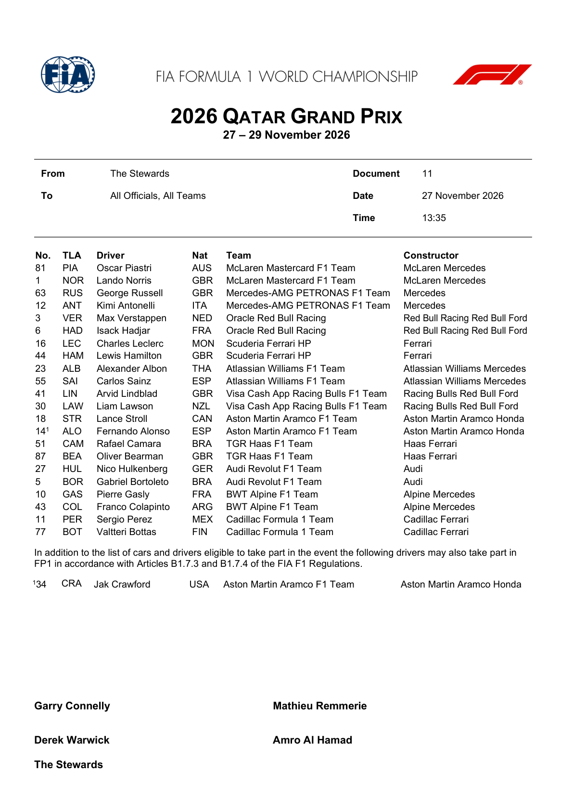
2026_qatar_grand_prix_-_curfew.pdf
PDF retrieved 2026-11-27T13:31:54+00:00; this is not its issue date.
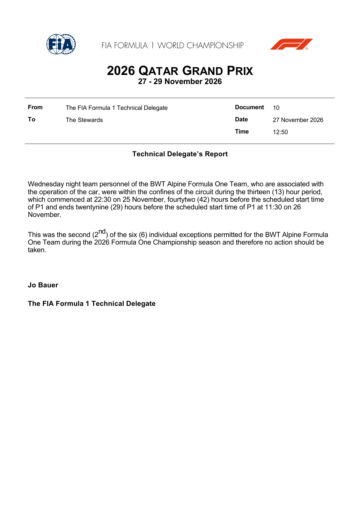
2026_qatar_grand_prix_-_self_scrutineering.pdf
PDF retrieved 2026-11-27T13:31:54+00:00; this is not its issue date.
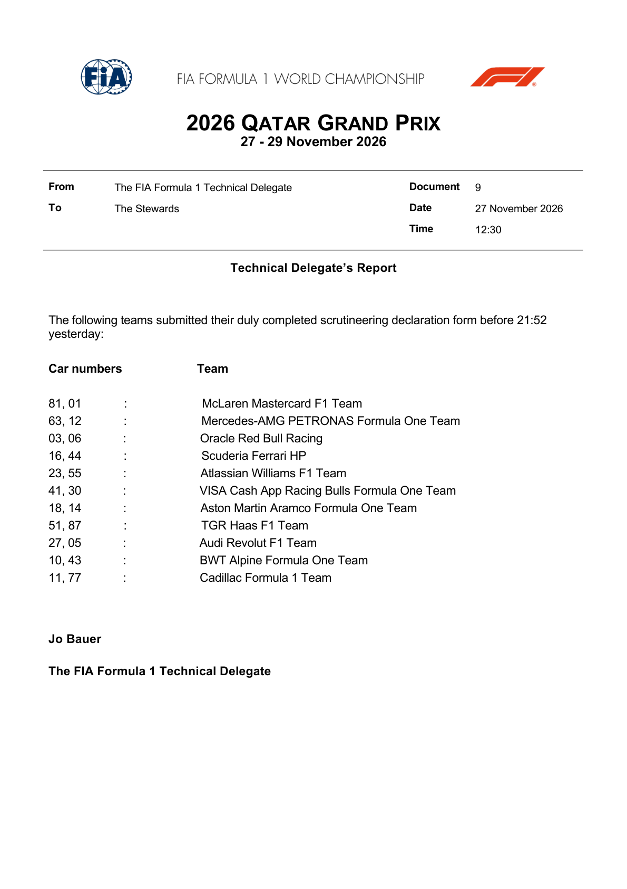
2026_qatar_grand_prix_-_competition_visa.pdf
PDF retrieved 2026-11-27T13:31:54+00:00; this is not its issue date.
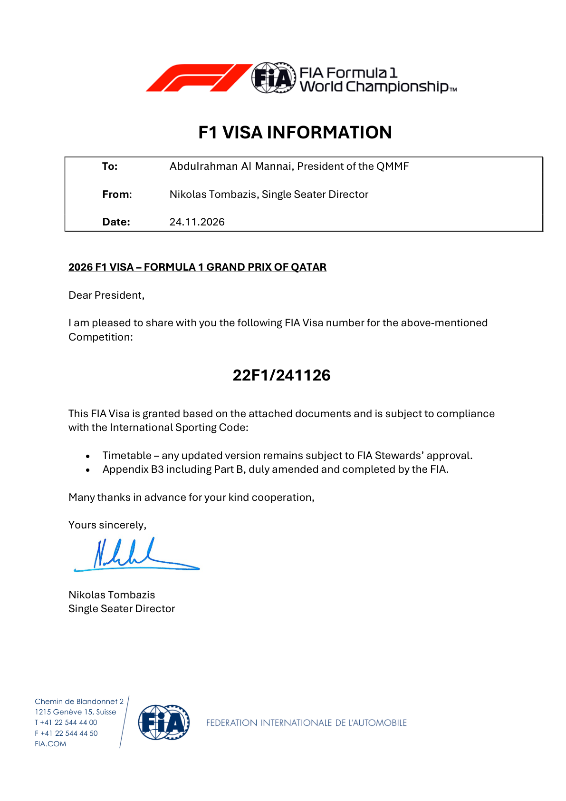
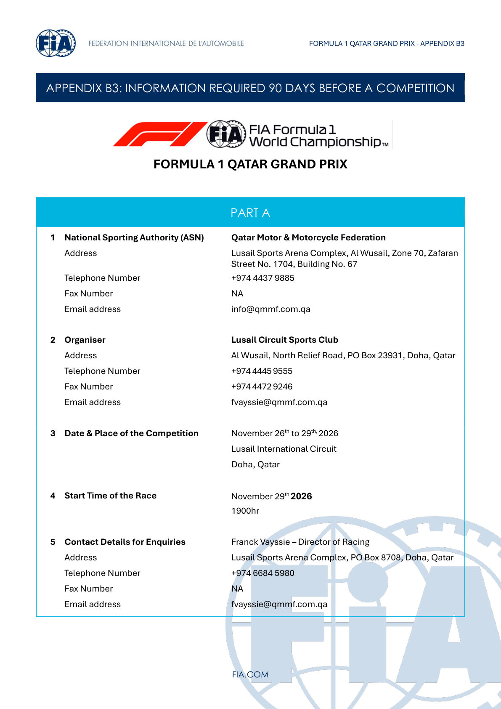
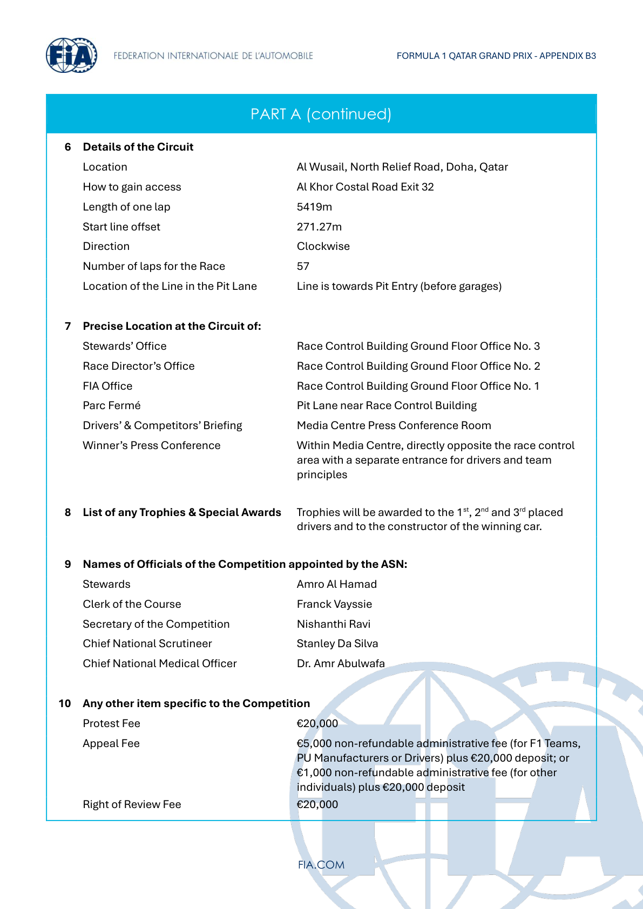
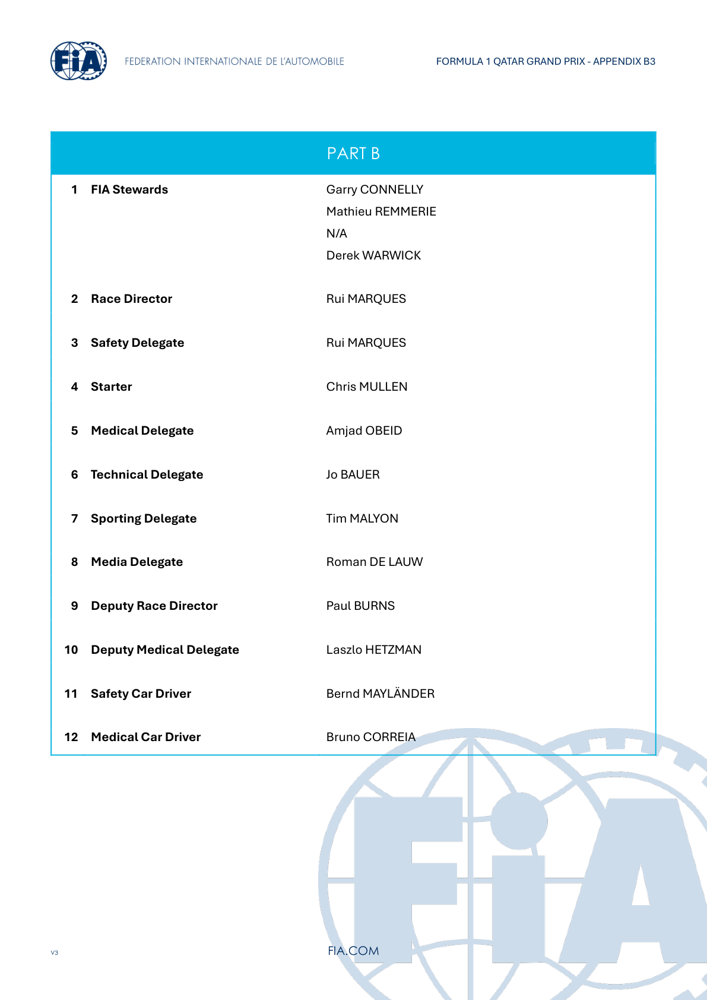
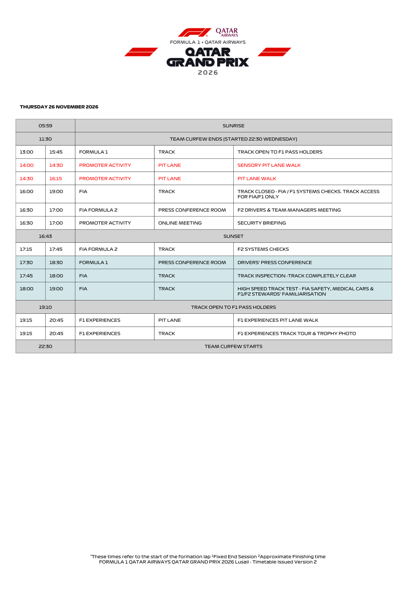
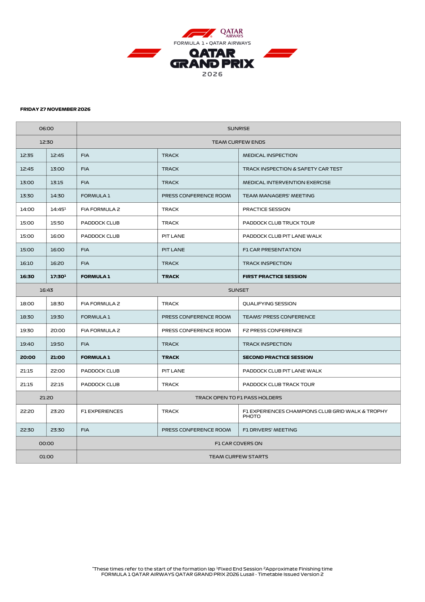
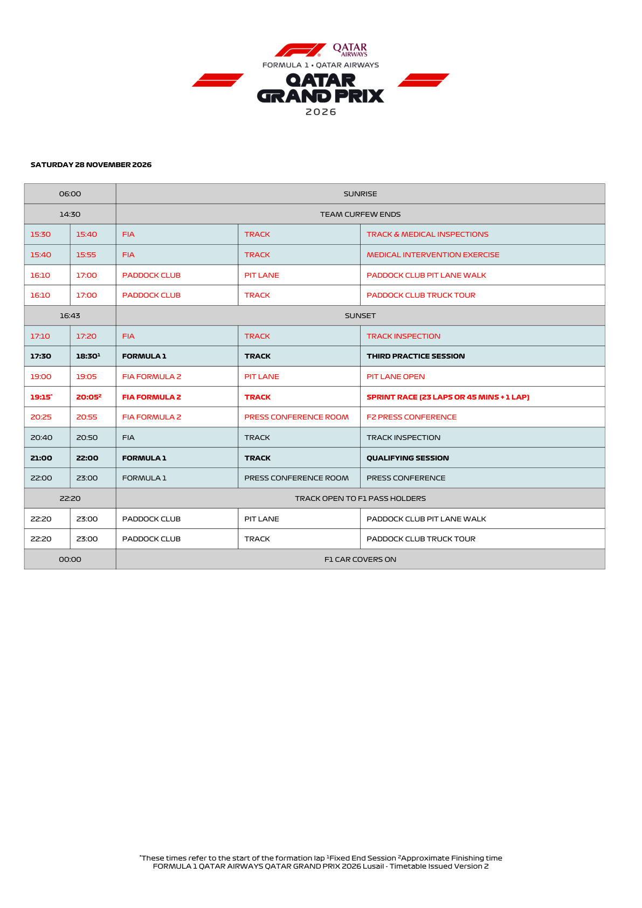
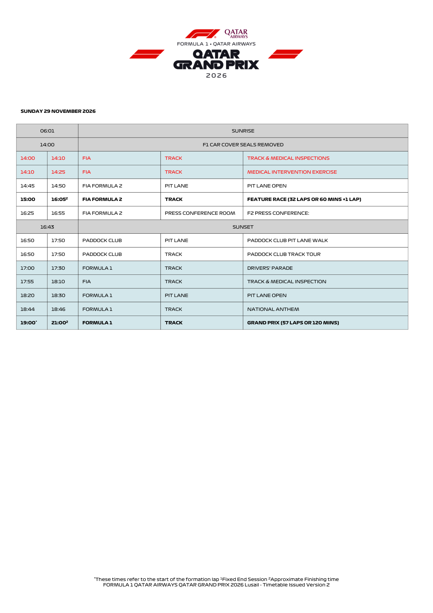